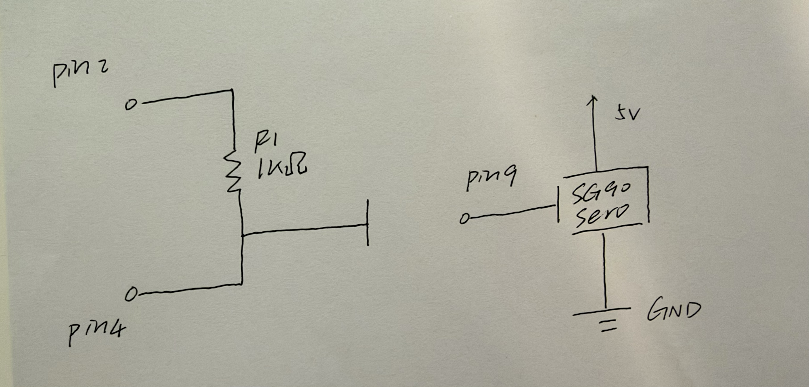
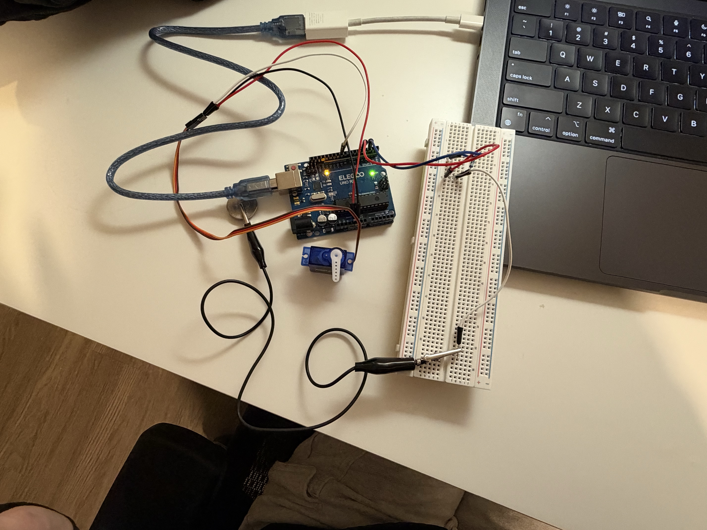
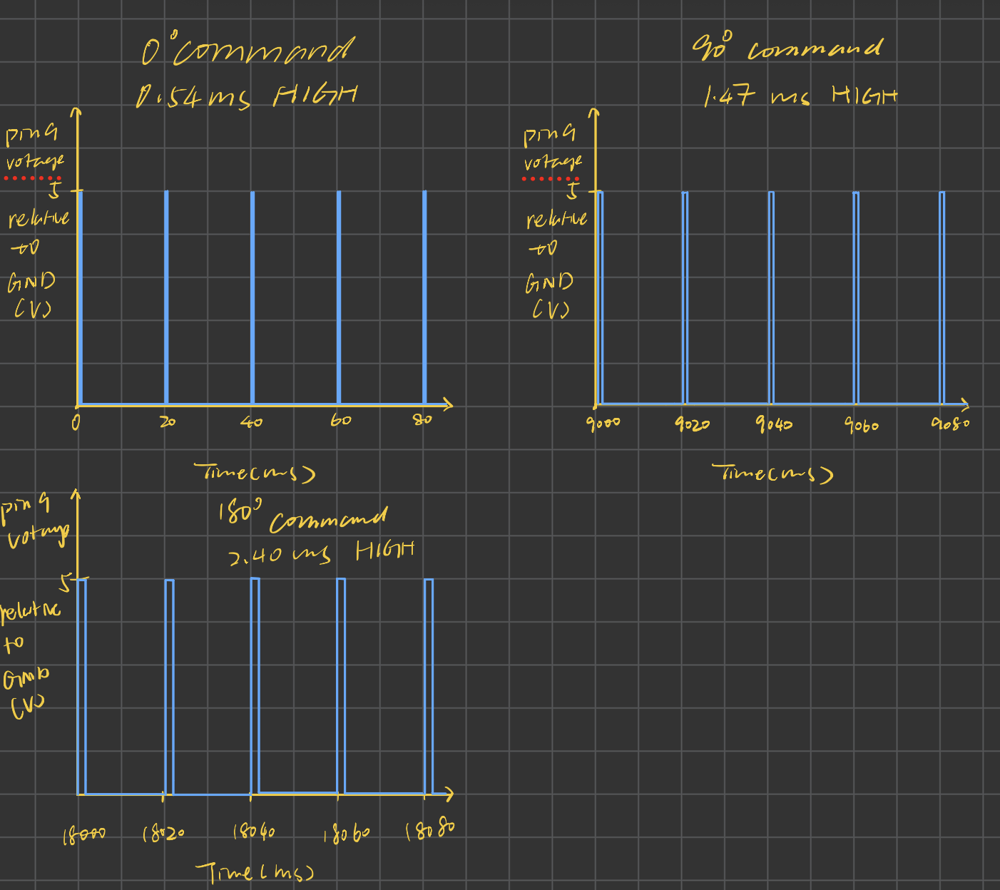

Assignment 4: Libraries!
Rebecca Liu
Capacitive Touch-Controlled Servo
I used a coin as a capacitive touch input. When I touch the coin,
the servo moves to 90°. When I release it, the servo returns to 0°.
The sketch uses the CapacitiveSensor library to detect
touch and the Servo library to control the servo.
Schematic

Physical Circuit

Circuit Operation
Arduino Code
The sketch combines 30 sensing cycles into each reading and waits 50 ms between readings to keep the serial output readable while still responding quickly to touch. I chose 0° and 90° because a quarter turn is easy to see in the demo. The threshold of 100 is a starting value that should fall between the untouched and touched readings in the Serial Monitor.
// Load the library for capacitive touch sensing.
#include <CapacitiveSensor.h>
// Load the library for controlling the servo.
#include <Servo.h>
// Use Pin 2 to send and Pin 4 to receive the sensing signal.
CapacitiveSensor touchSensor(2, 4);
// Create an object to control the servo.
Servo myServo;
// Set a starting threshold for detecting touch.
const long touchThreshold = 100;
// Set up the serial connection and servo when the Arduino starts.
void setup() {
// Match the Serial Monitor's baud rate.
Serial.begin(9600);
// Send the servo control signal through Pin 9.
myServo.attach(9);
// Set the servo's starting position to 0 degrees.
myServo.write(0);
}
// Read the sensor and update the servo repeatedly.
void loop() {
// Combine 30 sensing cycles into one touch reading.
long touchValue = touchSensor.capacitiveSensor(30);
// Label the reading in the Serial Monitor.
Serial.print("Touch: ");
// Print the reading so I can check the threshold.
Serial.println(touchValue);
// Treat readings above the threshold as a touch.
if (touchValue > touchThreshold) {
// Turn the servo a quarter turn when the coin is touched.
myServo.write(90);
}
// Handle readings at or below the threshold.
else {
// Return the servo to its starting position.
myServo.write(0);
}
// Wait 50 milliseconds before taking another reading.
delay(50);
}Additional Questions
1. What is the voltage at Pin 9 over time?

2. How can I handle a sensor reading that is wrong 1% of the time?
I would take three readings close together and use the median. For example, if the readings are 50, 900, and 52, sorting them gives 50, 52, and 900. The middle value is 52, so the isolated spike has little effect on the result.
readings = []
repeat 3 times:
readings.append(readSensor())
sort readings from lowest to highest
return readings[1] // Index 1 is the middle value.3. How can I reduce random measurement noise of ±10%?
I would average ten readings collected over a short time. If the true input stays roughly stable, readings above and below it can partly cancel each other out. For example, readings of 90, 103, and 107 average to 100.
total = 0
repeat 10 times:
total = total + readSensor()
return total / 10.0 // Divide by the number of readings.4. Did I use AI tools?
Yes. I used ChatGPT to clarify a few concepts while working on this assignment. I drew the final waveform and circuit schematic myself, and I wrote my own answer to Question 2.
- Servo waveform: I asked where the 0.54 ms pulse width came from and how to show it on the graph. ChatGPT explained how the Servo library maps angles to pulse widths and showed me how those widths fit on the time axis. I used that explanation to draw my own graph.
- Question 2: I asked how taking the median helps when a sensor occasionally gives a wrong reading. ChatGPT walked me through an example with three readings. After I understood why the middle value is less affected by an extreme reading, I wrote my own answer.
- Circuit schematic: I asked how to draw the wire from the coin. ChatGPT explained that the coin uses a single wire to the Pin 4 junction, where it connects to one end of the resistor. I drew that connection in my schematic.
The waveform explanation helped me separate the time the signal stays high from the time the servo takes to move. That made it easier to decide how wide to draw each pulse.